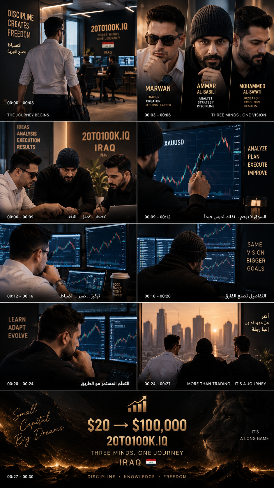
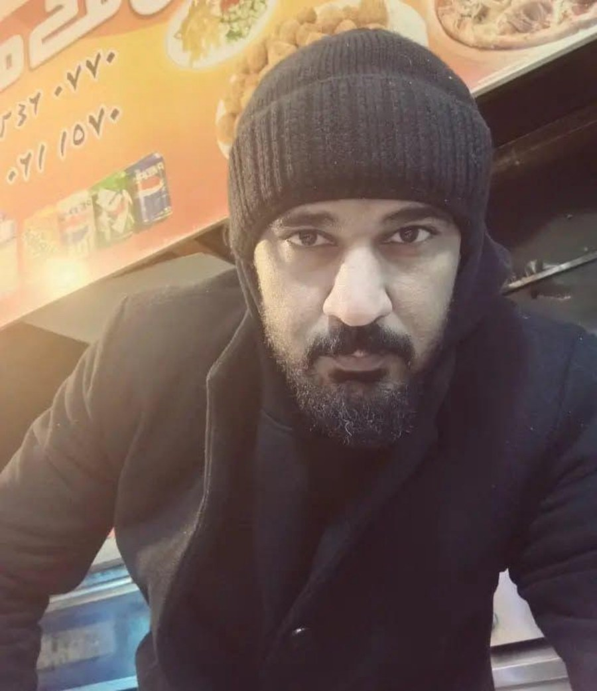

01
نبدأ صغيرًا
رأس المال المعلن للبداية هو $20، وأي نمو يجب أن يأتي من نتيجة حقيقية.
نبدأ من $20 بهدف الوصول إلى $100,000 عبر التداول اليدوي والانضباط وإدارة المخاطر. لا نعدك بالنتيجة، ولا نخفي الخسائر، ولا نُجبر أنفسنا على التداول عندما لا توجد فرصة واضحة.

إنه سجل لتجربة تداول تبدأ برأس مال صغير وتُعرض فيها القرارات والنتائج كما هي. النجاح هنا ليس مجرد الوصول إلى رقم؛ بل بناء عملية قابلة للمراجعة والتحسين.
رأس المال المعلن للبداية هو $20، وأي نمو يجب أن يأتي من نتيجة حقيقية.
لا توجد صفقة إجبارية لتحقيق هدف يومي. عدم التداول قرار صحيح عندما لا توجد أفضلية.
أرباح، خسائر، تراجع، وأيام انتظار: كلها تدخل في السجل دون تجميل.
نقطة البداية المعلنة للتحدي.
الهدف طويل المدى، وليس ضمانًا أو موعدًا مضمونًا.
التحليل والقرار والتنفيذ يدوي.
لا صفقة لمجرد الوصول إلى رقم يومي.
إدارة المخاطر وحماية رأس المال قبل مطاردة العائد.
النتائج السلبية والتراجعات تُعرض ضمن الرحلة، لا تُخفى.
كل صفقة تُراجع بهدف تحسين المنهج، وليس تبرير القرار.
الأرقام في هذا القسم تُقرأ مباشرة من ملفات البيانات داخل المستودع. عند تحديث البيانات ثم دفعها إلى GitHub، يستطيع الموقع عرض النسخة الجديدة دون إعادة بناء المحتوى يدويًا.
لا توجد صفقات مصطنعة. ستظهر هنا فقط البيانات التي نضيفها فعليًا إلى data/trades.json.
| التاريخ | الأداة | الاتجاه | الدخول | الخروج | P/L | النتيجة | ملاحظة |
|---|
المشروع يجمع أشخاصًا حقيقيين يتبادلون التحليل والخبرة ويشاركون في توثيق الرحلة.
صاحب التحدي وموثّق الرحلة.

مساهم في النقاش والتحليل وتبادل الخبرة.
مساهم في التحليل والخبرة ودعم الرحلة.
سجل قصير للأحداث المهمة في الرحلة والتطوير.
البداية البصرية الرسمية للتحدي.
لا. هو هدف للمشروع وليس وعدًا بعائد أو نتيجة.
لا. No Trade قرار مشروع عندما لا توجد فرصة مناسبة.
لا. الهدف توثيق الرحلة والعملية، وليس بيع إشارات أو وعود.
البيانات منفصلة عن التصميم. عدّل ملفات data/ ثم ارفع التغيير إلى GitHub، وستُحدّث الاستضافة النسخة تلقائيًا.
جميع الروابط الرسمية في مكان واحد. هذه الروابط للتوثيق والمتابعة وليست قناة إشارات تداول.
رحلة واحدة. قرارات حقيقية. توثيق مستمر.